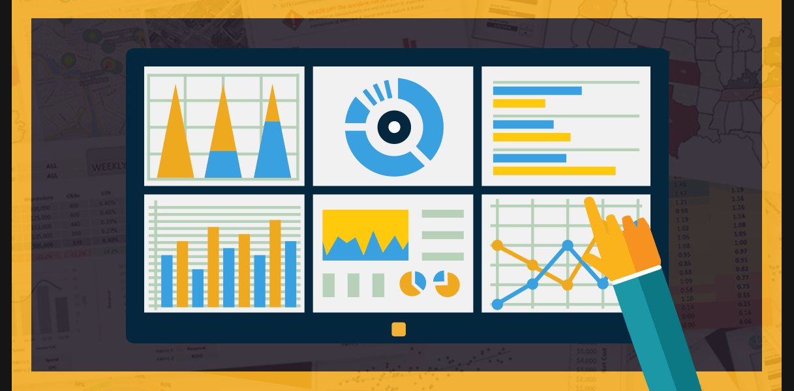

In this project, I Identified key factors to reduce attrition
Improved the hiring process, Improved employee experience
Made workforce more productive & Gained employee trust.

I created a dashboard in Tableau, that provides real-time insights into key performance indicators (KPIs) related to the car sales data which will enable me to make informed decisions, monitor the progress, and identify trends and opportunities for growth.

Conducted data cleaning on the Nashville Housing dataset using SQL, by standardizing date formats, populating missing property addresses, and parsing address components.The process aimed to improve data consistency and quality, making the dataset more suitable for subsequent analyses and reporting.
Designed a Python project utilizing pandas, seaborn, and matplotlib to analyze correlations in a movie dataset. Conducted data exploration, identified missing values, and handled outliers.Applied data preprocessing techniques and created visualizations such as scatter and strip plots for insightful data representation.

Designed an Excel project for bike sales analysis, cleaning data, organizing insights with pivot tables, and creating a visually appealing dashboard with charts & filters.